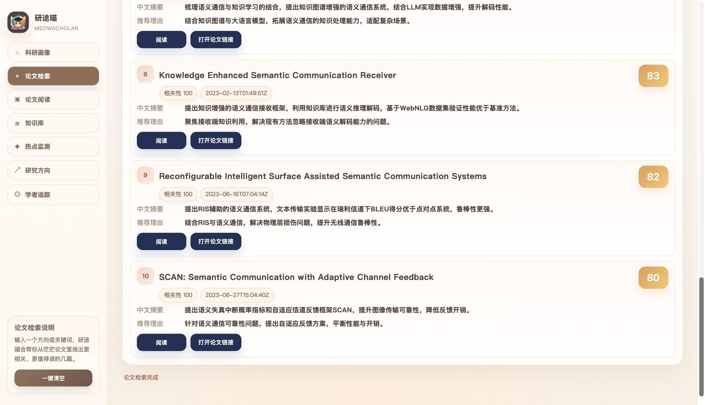
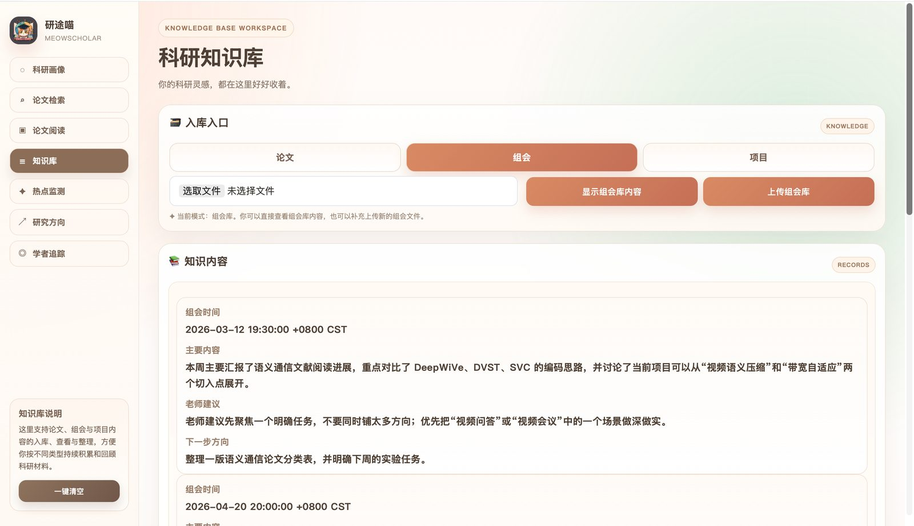
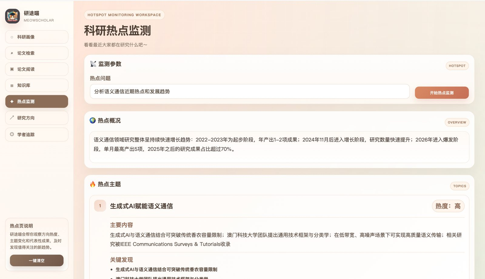
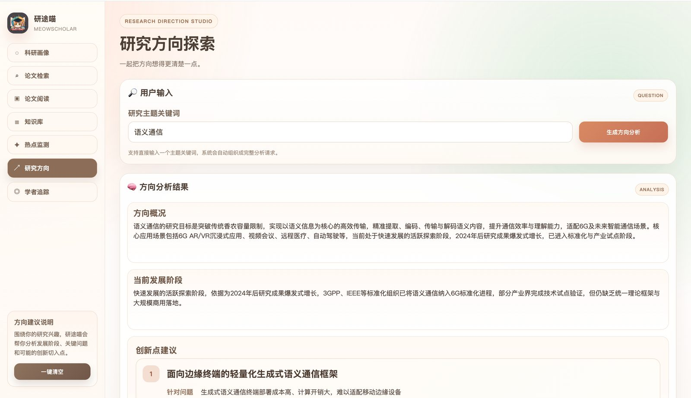
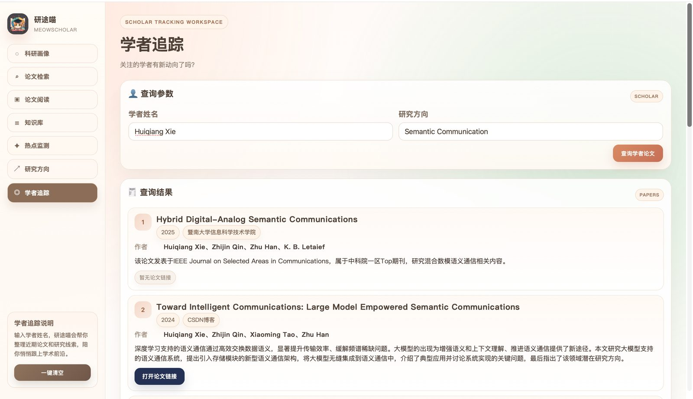

资料分散
论文、组会、项目材料和本地笔记分布在不同工具中，后续复盘和复用成本高。
AI Agent / Research Workflow Platform
从“帮我读一篇论文”扩展到“陪我完成一段科研旅程”：研途喵将论文检索、论文伴读、知识入库、热点监测、方向分析、学者追踪和科研画像串成一个可持续沉淀的科研工作台。

Why
现有科研 AI 工具大多解决一次检索、一次阅读或一次问答。真实科研更像一条长期链路：选题、找文献、读论文、记组会、推进项目、看热点，再把过程沉淀成自己的科研资产。
论文、组会、项目材料和本地笔记分布在不同工具中，后续复盘和复用成本高。
论文阅读、摘要提炼、推荐排序和热点归纳依赖人工反复筛选，容易消耗大量前期时间。
单次问答结果很难转化成可检索、可追踪、可继续支撑方向分析的结构化知识。
阅读情况、项目推进、组会反馈缺少统一汇总，学生很难快速判断当前科研阶段和下一步行动。
How
系统以自然语言需求为入口，由总控智能体完成意图识别、参数补齐、变量管理和工作流调度；后端服务层统一解析 Coze 智能体输出，前端以稳定结构展示结果并承接下一步操作。
提供科研画像、论文检索、论文阅读、知识库、热点监测、方向分析和学者追踪页面，支持跨页面状态衔接。
围绕学生、论文、知识库、组会、项目、热点和方向结果建立结构化记录，为后续复用提供依据。
智能体返回内容经过后端归一化，避免 Markdown、JSON 字符串和嵌套字段直接散落到前端逻辑中。
Difficulties
论文推荐结果要能继续进入论文阅读，论文解析结果要能继续问答和入库，热点与知识库内容还要反哺方向分析。难点不在单个页面，而在模块之间的状态承接。
大模型可能返回 Markdown、半结构化文本或嵌套 JSON。项目通过服务层做字段清洗、容错解析和统一返回，让前端获得可渲染的数据结构。
论文、项目、组会材料格式不同，需要抽取创新点、系统模型、算法、数据集、老师建议、项目进展等不同粒度的信息，并统一进入知识库。
页面既要保留论文原文、AI 评价、图表链接和报告内容，又要让用户快速判断重点，因此前端采用分区、卡片、标签和结果摘要组织信息。
Outcome
项目已形成可演示的科研工作台原型，覆盖从“外部信息获取”到“个人科研画像”的完整链路，适用于选题调研、组会准备、论文阅读、项目推进和成果整理等场景。
Product Screens

按研究方向检索候选论文，生成中文摘要、推荐理由和阅读优先级，并衔接后续论文阅读。

支持论文上传、链接解析、五维评价和基于论文上下文的 AI 伴读问答。

将论文、项目和组会材料结构化入库，支持历史查询和分类展示。

围绕方向检索外部动态，生成热点主题、趋势图表和分析报告。

综合热点、论文推荐和知识库内容，输出方向概况、关键挑战与创新点建议。

按学者和研究领域整理代表论文、年份、来源、摘要与链接。
Implementation